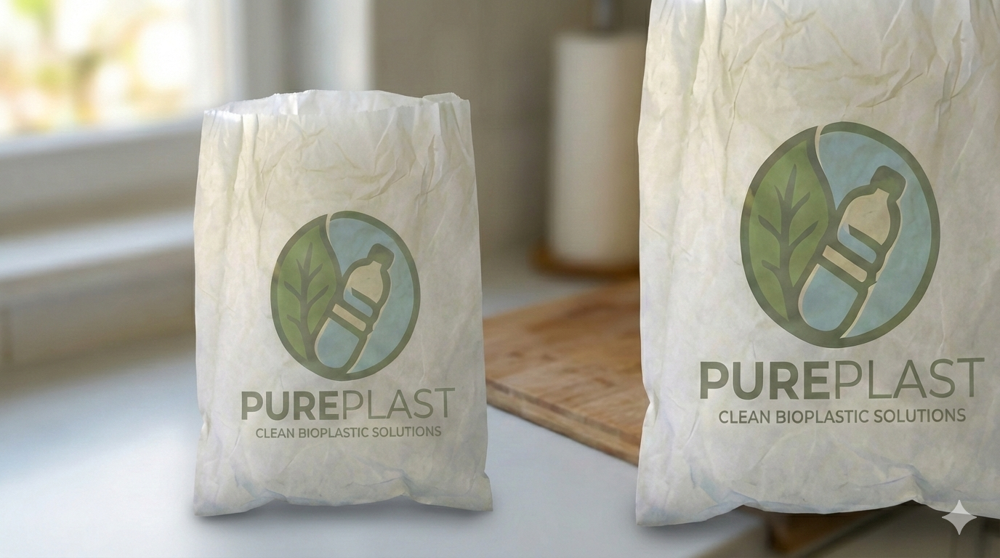
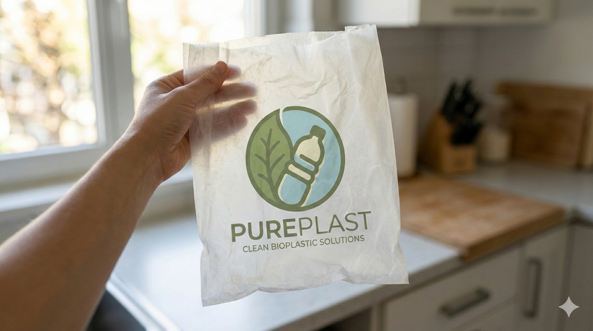
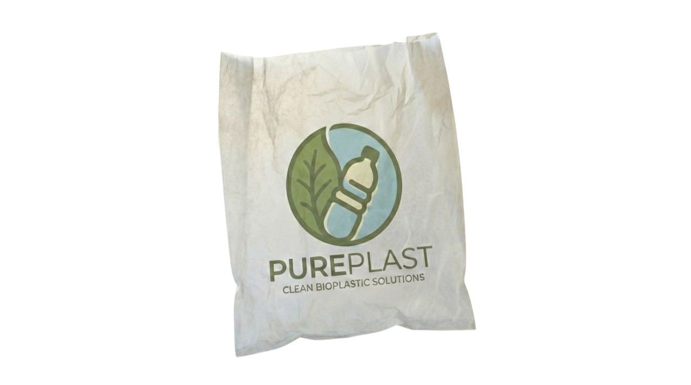

TAPAI BIOTECH INNOVATION



Experience the next evolution of material science. PUREPLAST is more than just an alternative, it's a breakthrough in biotechnology and business. By harnessing the power of traditional Indonesian fermentation—Tapai Singkong has been born, a bioplastic that respects the earth.
Learn More
Forget about the old, harmful plastic that we used to have it. No it's time to try the new eco-friendly bioplastic, PURELAST. This bioplastic isn't made from polymer that harm the enviroment, but from an Indonesian traditional food, fermented casssava, a.k.a. "TAPAI SINGKONG." Instead of dissolve into microplastics that harm your own health, this bioplastic will dissolve with the nature since it's biodegradable, or if you just want to get rid of it, dip it in the the water and it will dissappear with the water.
Experience the porcess and the flow in the making of PUREPLAST:

